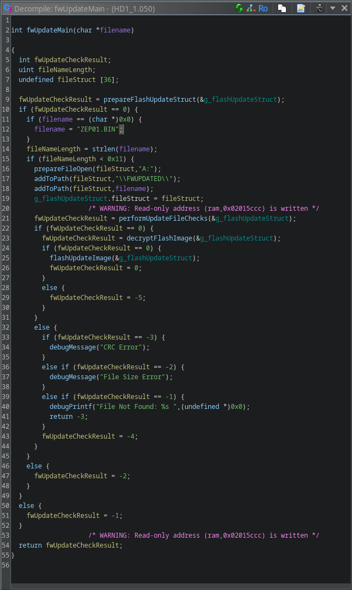
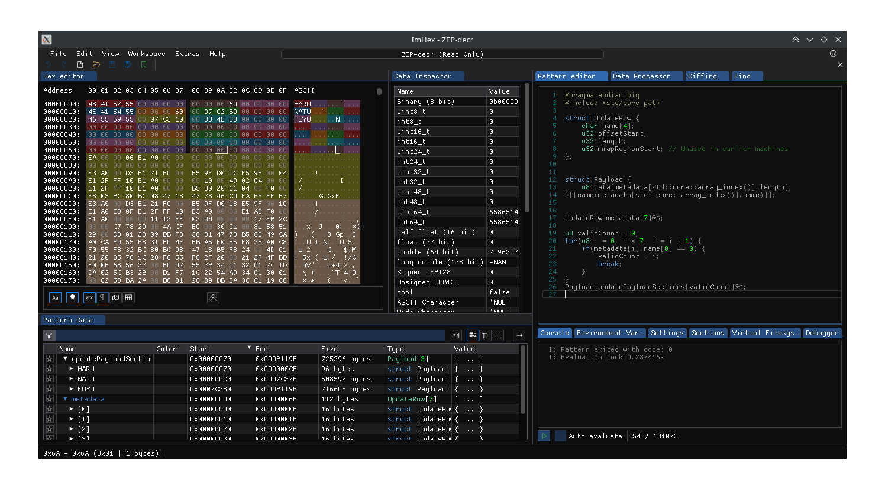

Many people would like to update their NW-HD1 to ver 2.000, because, unlinke previous versions, it supports the playback of MP3 files.
A few months ago, two members of the Minidisc Wiki Discord server (@___L___ and @richardhopton) have successfully managed to transfer the flash image from one Sony NW-HD1 (with ver. 2.000) with the use of the debug UART console and external programmers.
During that process, it became clear that the Sony Firmware supports updating the flash on-device. Some internal documents even describe the process. However, the files mentioned there are missing.
Fortunately, since the flash ROM containing version 2.000 got dumped, it should be possible to recreate the aforementioned ZEP01.BIN file.
Knowing that, I decided to try and reverse engineer the HD1's firmware in Ghidra to try and find the update routines, which was surprisingly simple.

Main firmware update routine
Before flashing the image file, the firmware reads the unencrypted header, and runs several checks:
After that check completes, the code decrypts the payload, and parses its header. The metadata header consists of 6 entries, each one 16 bytes long, with the format:
struct UpdateHeaderEntry { char name[4]; uint32_t dataSectionOffset; uint32_t length; uint32_t startOfSectionInROM; // Unused in the HD1 / HD5, used in A1000 };
The firmware then checks if the names of sections in the payload match its internal names. Locating that function makes it trivial to get the information about where each section is located, and what it's called:
Since the raw FLASH is usually mapped at address 0x01000000, after adding the offsets above and verifying the contents, I was able to confirm that the ROM sections are indeed located at the correct spots.
I was able to cross-reference them with the sections provided by Sony in the NW-HD5 update file, which is publicly avaliable.
After all that, I was able to simply recreate the original ZEP01.BIN by carving the sections from the appropriate addresses of the image.
That resulted in a payload as follows:  (Imhex format available here)
All that was left to do was to encrypt it, and encapsulate it in the update file container:
struct UpdateFile { // Header: char fileId[8]; // The HD1 does not check the file ID. I just put "ZEP01BIN" there uint32_t size; // Size of the payload + 16 bytes for the header uint32_t magic; // The bytes 09 08 0b 0a uint8_t payload[]; uint32_t crc; // CRC of the payload concatenated to the header };After that, I was left with the recreated ZEP01.BIN update file.
I'm not responsible for any bricked devices. This process might cause your device to become bricked! Try it at your own risk!